内容要点
一段 12 分 07 秒的剪映专业版时间线功能实操课，把时间线上方一排功能按钮和轨道操作全讲透：①加号=新建多条时间线当独立工作区（Command+C复制→新建→Command+V粘贴=版本管理，改坏了能回原版）。②鼠标模式切换：分割模式快捷键B左键切割，Command+B多轨道同步分割；向左全选（左括号）选中片段及其左侧全部，向右全选（右括号）方向相反。③撤销（回退一步）/重置（向前一步）组合用；向左裁剪Q/向右裁剪W一步到位，比分割+删除快；Delete删除。④标记=时间线便利贴（记特效怕忘），选中音频打点=音乐踩点，按节奏点卡点。⑤智能剪口播自动识别语气词/重复/停顿，一键删除，几分钟的活几秒搞定。⑥右侧功能：麦克风=配音录音（切设备/音量/消除回音）；主轨道吸附（默认开=无缝连接，关=随意移动）；磁铁（默认开=自动吸附剪切点）；关闭联动（默认开=字幕音效跟主轨动，关=独立调整）；关闭预览S（默认关=点素材自动预览，开=省资源更流畅）。⑦视图：Command+滚轮缩放、全局预览Shift+Z、三点图标调轨道高度+显示状态。⑧轨道左侧：T=文字轨/方块=视频轨/音乐图标=音乐轨；小锁=轨道锁定防误操作；隐藏轨道清理视野；关闭原声不影响画面；独奏单独监听一条轨。⑨时间线操作：拖片段尾部双括号调时长；底部圆点双头箭头=原声淡入淡出；音频中间横线上下拖=直接调音量；Command+R变速（点三角选0.5/2/10倍，片段顶部拖更快）；更多功能（倒放/定格/镜像）可右键或图标栏空白处前推。⑩右上方片段面板：画面/音频/变速/动画/调色集中调整。
知识结构
加号新建多条时间线=多个独立工作区互不干扰。
Command+C复制→新建时间线→Command+V粘贴，原版保留随便改。
B键左键切割；Command+B多轨道同步分割。
左括号/右括号=选中片段及左侧/右侧全部。
撤销/重置；Q向左裁剪/W向右裁剪一步到位；Delete删除。
便利贴打点记特效；选中音频打点=音乐踩点卡节奏。
自动识别语气词/重复/停顿，一键删除，几分钟的活几秒搞定。
配音录音/主轨道吸附/磁铁吸附/关闭联动/关闭预览S。
Command+滚轮缩放、全局预览Shift+Z、轨道高度+显示状态。
轨道锁定/隐藏轨道/关闭原声/独奏监听。
拖尾调时长、底部圆点淡入淡出、横线拖音量。
Command+R变速、顶部拖拽、倒放/定格/镜像。
右上方集中调画面/音频/变速/动画/调色；下节课预告调色。
剪映时间线功能=三组：①顶部一排按钮：加号多时间线（Command+C复制→新建→Command+V=版本管理）、分割模式B（Command+B多轨同步分割）、左右全选（左括号/[右括号]）、撤销/重置、向左裁剪Q/向右裁剪W（一步到位比分割+删除快）、Delete删除、标记（便利贴+音乐踩点）、智能剪口播（自动去语气词/重复/停顿）。②右侧功能：麦克风配音录音、主轨道吸附（默认开=无缝，关=随意移）、磁铁（默认开=自动贴剪切点）、关闭联动（默认开=字幕音效跟主轨动）、关闭预览S（卡顿就开）。③轨道左侧：小锁=锁定防误操作、隐藏轨道、关闭原声、独奏单独监听。④时间线操作：拖尾部双括号调时长、底部圆点=原声淡入淡出、音频中间横线=直接调音量、Command+R变速（0.5/2/10倍，片段顶部拖更快）。心法：每个功能默认状态先搞清楚，短剪辑用快捷键长剪辑用锁定，效率靠熟练。
00:00-02:40多时间线=多个独立工作区
功能总览：「今天我们学剪映专业版的隐藏功能……首先我们来看一下时间线上方的这排功能按钮。」
加号新建：「先看左侧的第一个是加号图标，点击它就会在当前项目里新建一条时间线，甚至三条多条都可以。有什么用呢？相当于给你多个独立的工作区，而且互不干扰。」
版本管理场景：「当你剪完一个视频版本感觉差不多了，但还想试试另外一种节奏，改着改着发现还是原来的版本好……可是已经回不去了。再比如给客户剪完一个视频版本，客户让你改了好几轮之后说还是第一个版本好。」
操作：「你可以在修改第二个版本之前，用鼠标先选中所有素材，按Command加C复制，然后新建一条时间线，把原来时间线里的片段用Command加V粘贴过来，在这个新版本上继续改。这样一来第一条保留原版，其他几条放心大胆的改。」

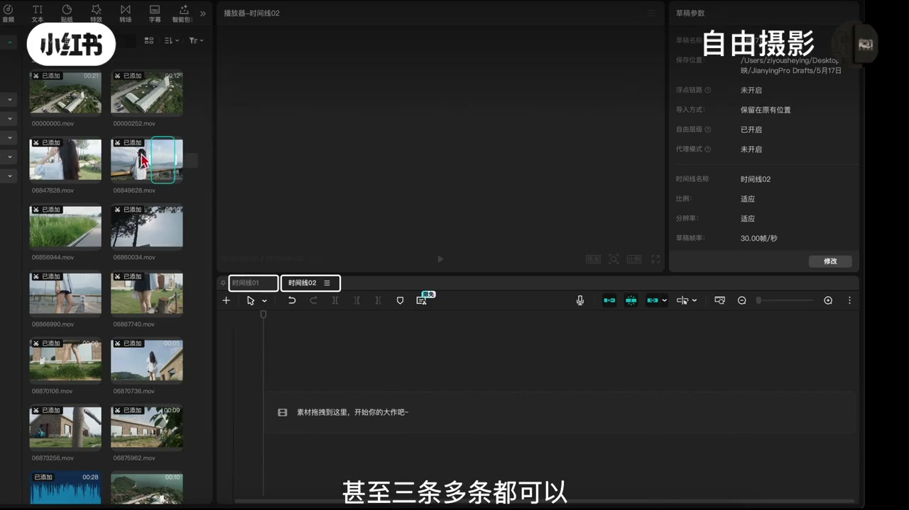
02:40-04:46鼠标模式：分割+左右全选
模式切换：「第二个功能有一个鼠标箭头，旁边还带一个小三角，用来切换鼠标的操作模式。点开后可以看到除了默认的鼠标模式，还可以切换到分割模式，快捷键B。」
单轨分割：「在分割模式下，将播放头移动到想要切割的位置，用鼠标左键即可完成分割。」
多轨分割：「如果想同时分割多个轨道上的素材，可以先选中素材，再使用快捷键Command加B，就能实现多轨道同步分割，非常方便。」
左右全选：「这个菜单中还提供了向左全选和向右全选功能，快捷键分别是左括号和右括号。比如按一下左括号，然后在某个片段上点击鼠标左键，就能选中这个片段以及它左侧的所有片段。右括号功能一样，只是方向反过来选右边。」

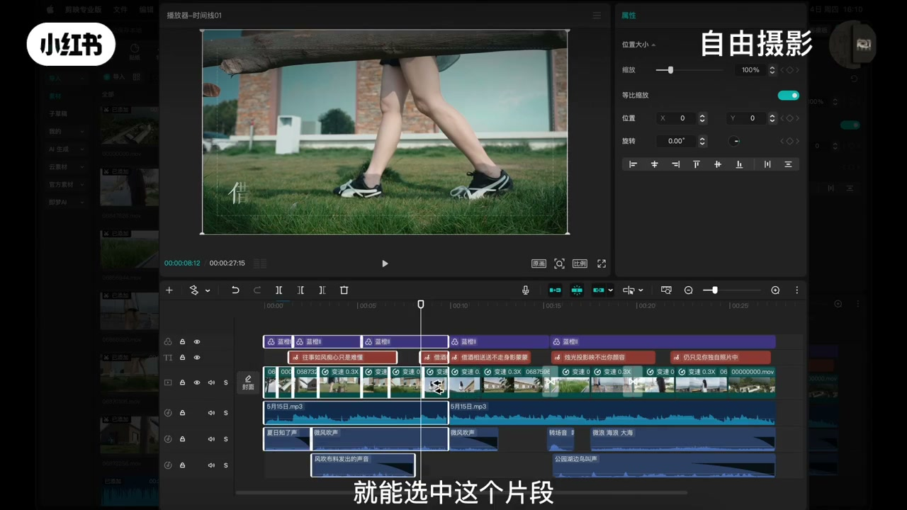
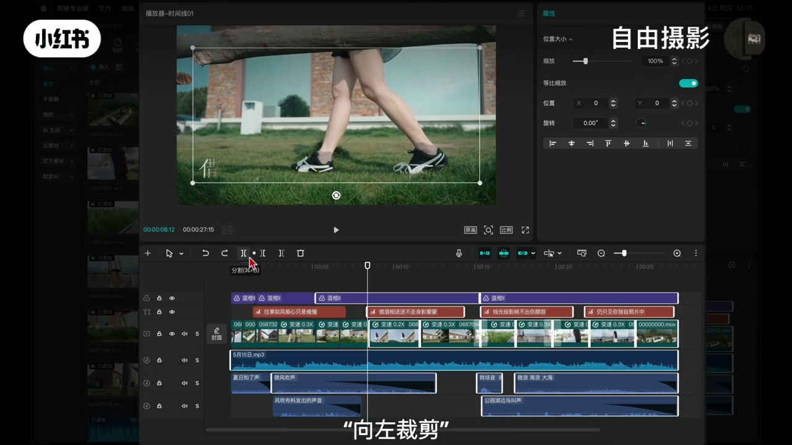
04:46-06:10撤销/重置/裁剪/删除
撤销重置：「撤销就是当你操作失误的时候可以往回退一步。撤销旁边是重置，也就是向前一步，当你觉得退多了想找回上一步操作。这两个功能在剪辑时偶尔会配合着用。」
向左裁剪：「比如下方这段音频素材，如果左边有一部分不想要了，选中模式后只需要点一下鼠标，或使用快捷键Q就能实现向左裁剪，前面部分直接被切掉并删除。这比之前的方法快多了，以前需要先分割、再选中、再删除，现在是一步到位。」
向右裁剪：「它旁边的向右裁剪快捷键W，原理和向左裁剪一模一样，只是裁剪方向变成了右边。」
删除：「时间线上哪个素材不想要了，直接选中它，点这个删除按钮就行了，也可以按键盘上的Delete键。」
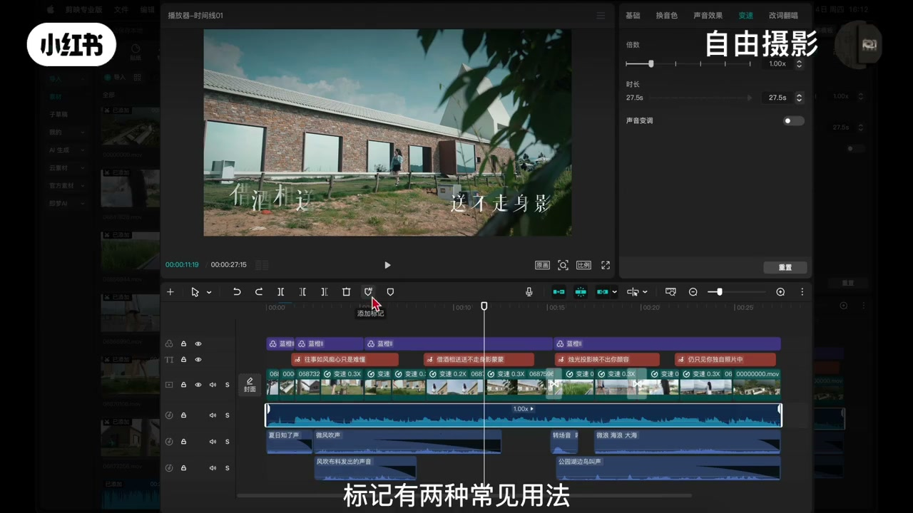
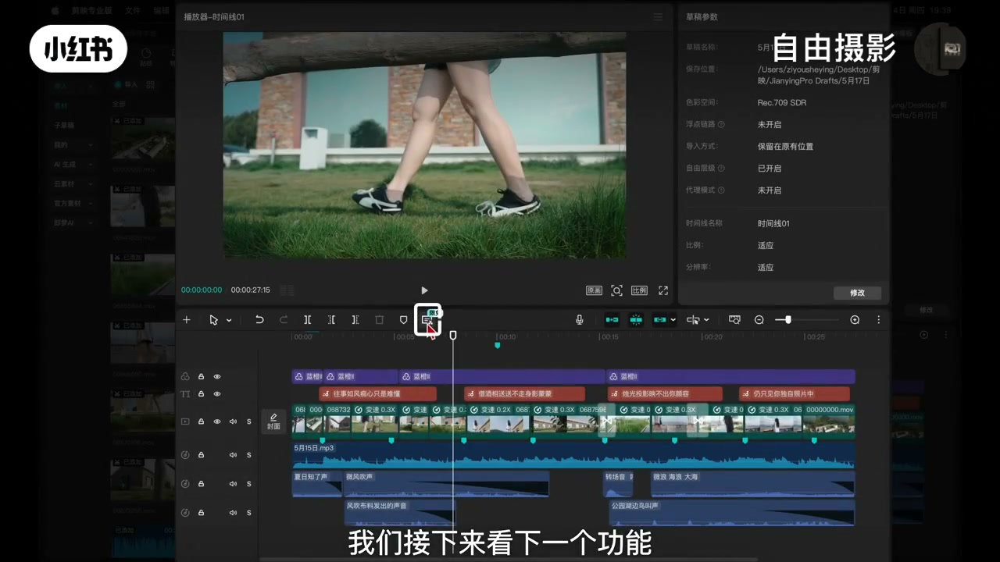
06:10-07:47标记：便利贴+音乐踩点
第一种用法：「你不需要选中任何素材，直接把播放头移动到时间标志上的某个位置，然后点击标记，就能在时间线上打一个点。你可以理解成在时间线上贴了一张便利贴。比如我们可以标记一个加个特效怕它等一下忘记，方便回头快速找到。标记好之后，鼠标停放在标记点上就能看到标记内容。」
第二种用法：「先选中音频素材，再点标记，这样就能对音乐进行踩点。踩完之后，音频上就会出现对应的节奏点，剪视频时就能照着这个节奏点来卡点，对于新手非常友好。」

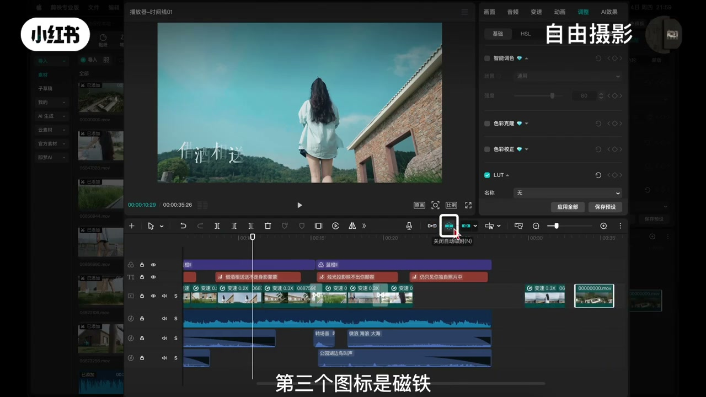
07:47-09:06智能剪口播：自动去语气词
痛点：「我们日常录视频的时候是不是会经常说错、老卡壳，会有很多的语气词。以前剪这种口播视频呢，得一帧一帧的去找到这些地方，再分割删除，很麻烦。」
操作：「现在有了这个功能，你只是要把素材放到时间线上，然后在上方这里点击智能剪口播，它就会自动识别出多余的语气词、重复与停顿的地方，你点一下删除，几分钟的活几秒钟就能搞定，效率非常的快。」

09:06-11:43右侧功能：录音/吸附/联动/预览
配音录音：「第一个是麦克风的图标，这个功能是配音的录音，点开后可以看到弹出的一个窗口，在这个窗口里可以切换你的设备录制音频，调整录音的音量，以及消除回音等设置。」
主轨道吸附：「第二个功能是主轨道吸附，在默认模式下它是开启的，所以我们在主轨道里每个素材的模式是连接的，不能留有空隙。当我们关闭这个模式下，我们再移动主轨道就可以随意移动片段位置了。」
磁铁：「第三个图标是磁铁，剪辑时在默认情况下，当我们把一段素材移动到相邻片段时，它会像磁铁吸住一样自动吸附相邻片段的剪切点，方便素材对齐。如果不想要这种效果把它关掉就行了。」
关闭联动：「第四个功能是关闭联动，这个功能默认是开着的，联动的对象包括文字、特效、音效等。当你移动主轨道的视频时，上面配好的字幕、下方的音效都会跟着一起动。而关闭联动之后，无论主轨道怎么移动，视频上方的文字和音频都不会跟着跑，这样就适合单独调整某个片段。」
关闭预览：「第五个是关闭预览，快捷键S。默认情况下这个功能是关闭的，所以你鼠标左键点一下素材它就会自动播放预览。开启之后就不预览了，点击素材也不会自动播放。如果你的电脑卡顿不流畅，可以把它打开，剪辑时会流畅一些。」
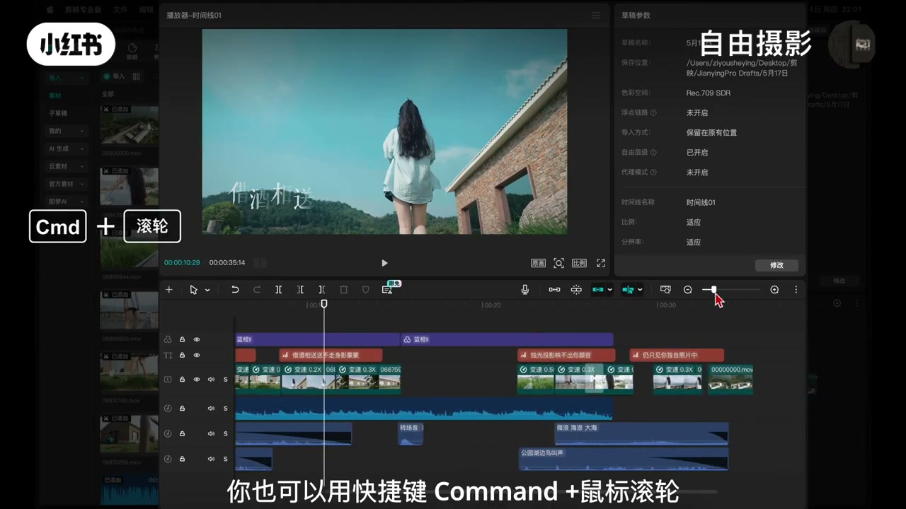
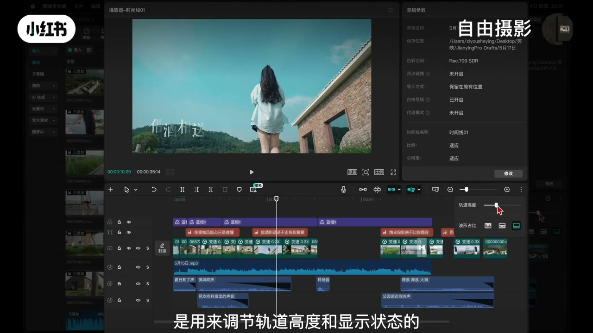
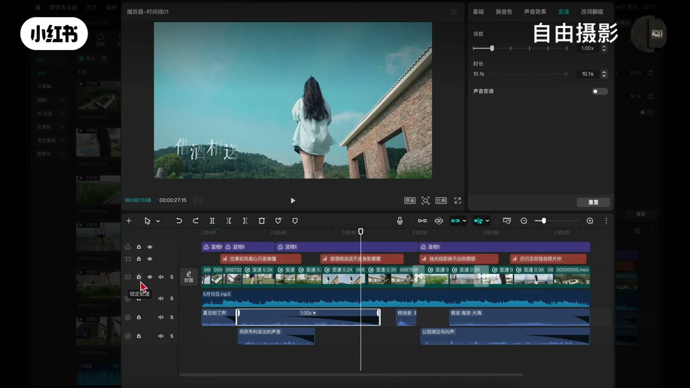
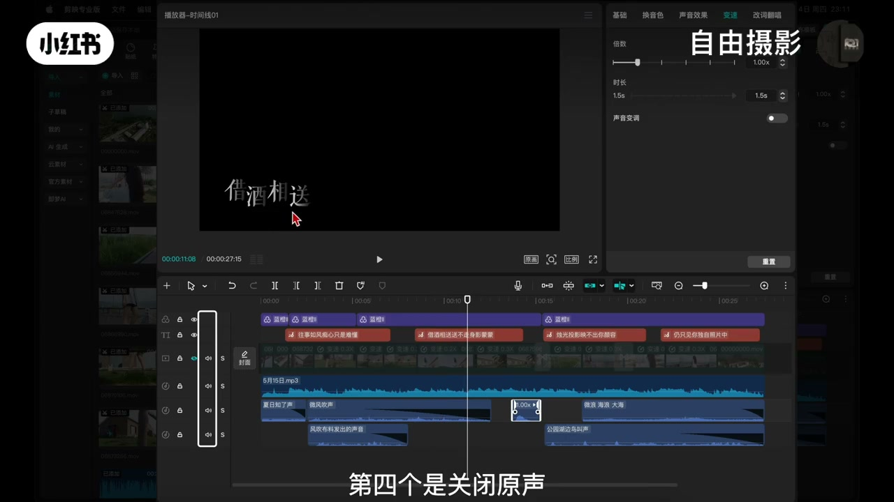
11:43-13:33视图：缩放/全局预览/轨道高度
缩放：「后面这个加号和减号是放大和缩小时间线，除了点这里的按钮，你也可以用快捷键Command加鼠标滚轮来缩放会更顺手。」
全局预览：「如果你觉得缩放有点乱了，想看整个时间线上的所有素材，点旁边像这个尺子一样的图标，这个叫全局预览，快捷键Shift加Z，这个快捷键我剪辑时会经常用到，非常好用。」
轨道高度：「最后面这个是三个点的图标，是用来调节轨道高度和显示状态的。点开后拉动这个滑块可以调整轨道的上下高度，下面还有一个选项可以调整视频素材的显示状态。如果你的电脑剪起来有点卡，可以在这里改个最简洁的显示状态，会流畅一些。」
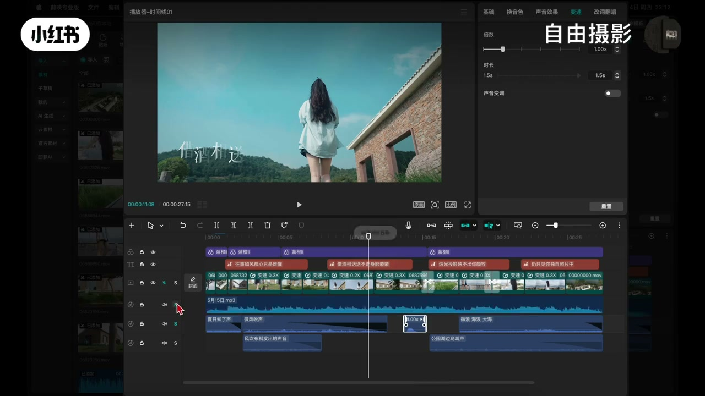
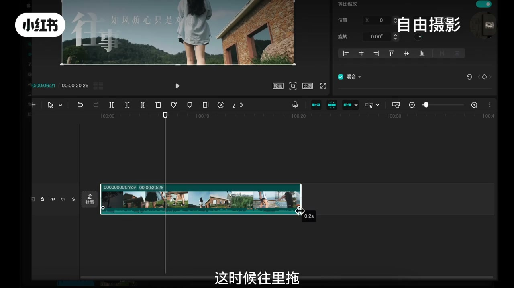
13:33-16:00轨道左侧：锁定/隐藏/原声/独奏
轨道类别：「第一排是用来识别轨道类别，比如这个T代表文字轨道，中间的小方块是视频轨道，最下方带音乐图标的是音乐轨道。这些只是方便你识别轨道类别。」
轨道锁定：「第二个图标是一把小锁，表示轨道锁定。日常剪一些长视频素材一多这个功能就很有用了。比如你在加音效，因为整体素材太多，一不小心点到了视频或文字，排查起来会非常麻烦。这时候就可以先锁定视频特效文字轨道，再一个一个的去添加音效，就不用担心误操作了。」
隐藏轨道：「第三个是隐藏轨道，有时候画面上的素材或字幕太多看着眼花，可以暂时把某个轨道隐藏掉，只看你想处理的部分，清理视野提升效率。」
关闭原声+独奏：「第四个是关闭原声，轨道上带有声音的视频素材你不想听它的原本声音，但也不想一个一个的去处理，可以直接关闭原声，不影响画面。第五个是开启独奏，当你想单独监听某一条轨道上的声音，比如只想听音乐轨道，就打开这个轨道的独奏，其他轨道会自动静音。」

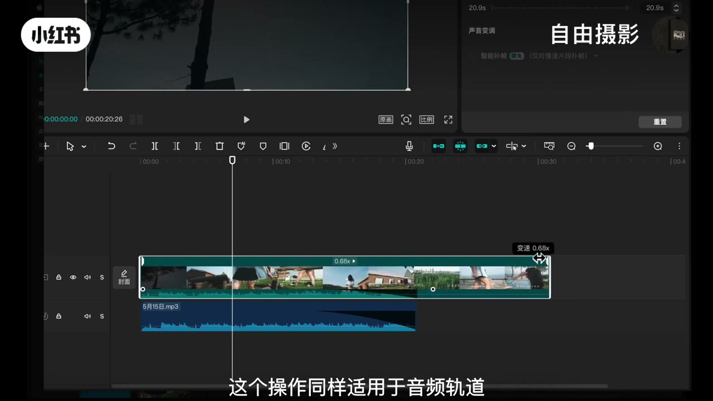
16:00-20:11时间线操作：时长/淡入淡出/音量
调时长：「把鼠标放在片段尾部，鼠标会变成双括号的样子，这时候按住鼠标左键拖动就可以调整片段的时长，往里推是缩短，往外拉是延长，相当于手动剪辑头尾，非常直观。」
淡入淡出：「如果把鼠标放在片段的底部靠近边缘的位置，片段的头尾两端会出现一个亮起来的圆点，再把鼠标挪到圆点上会变成左右双头箭头，这时候往里拖就可以给素材的原声添加淡入淡出的效果。」
淡出例子：「比如把音乐后面切掉，你会发现波形是突然结束的，听着会很突兀。这时只要拉动这个圆点调整一下淡出，音乐的结尾就会变得很自然舒服。」
直接调音量：「还有一个常用的操作，把鼠标放在音频素材中间这条横线上，鼠标会变成上下双头箭头，上下拖动就能直接调整这段音频的音量大小，不用进入面板调整。」

20:11-22:24变速+更多功能
变速：「我们这里先选中素材，按Command加R，素材中间会出现一个数字1.00，点一下旁边的小三角就可以选择具体速度，比如0.5倍、2倍甚至10倍。」
快捷变速：「更快捷的方式是把鼠标放在片段顶部的前端或后端，鼠标也会变成双头箭头，往后拉是变慢，往前推是加速，这个操作同样适用于音频轨道。」
更多功能：「如果你需要对素材做更多调整，比如倒放、定格、镜像这些，先选中素材，时间线上方就会出现更多小功能，你可以用鼠标按住图标栏的空白处往前推就能看到更多功能，也可以在素材上点右键，大部分基础功能都是字面意思，自己点两下就明白了。」
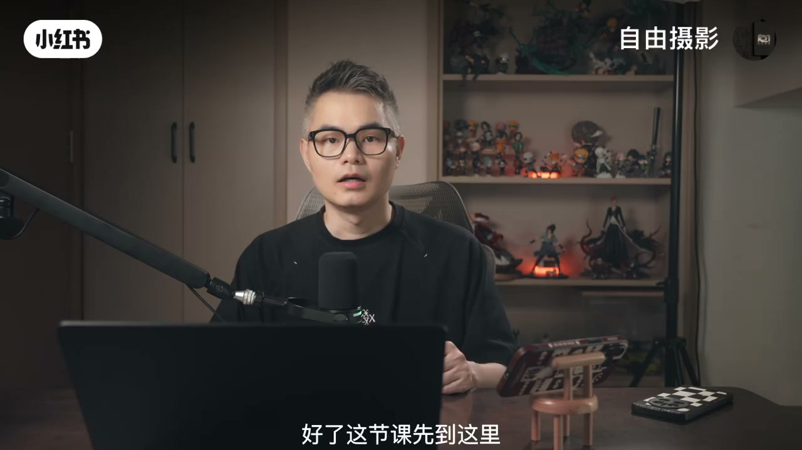
22:24-23:50片段面板+结语
集中面板：「选中素材之后，右上方区域也会有一个专门针对当前片段的面板，这里功能非常集中，比如画面调整可以调大小位置，音频调整可以调音量、降噪等，变速就是前面说的快进慢放，动画是加一些简单的进出场效果，还有调色功能，这些功能之后都会讲到。」
结语：「学会了这几个小技巧，你的剪辑效率会明显提升，不过下课之后一定要花点时间去熟悉一下，对这几个的内容加深一下记忆，这样才能真正掌握。下一节课开始呢，我们将解锁剪映调色功能，也是大家最期待的。」
完整转录（336段）
以下文本由 Whisper medium 模型自动转录，可能存在少量识别误差，已尽可能修正。
今天我们学简易专业版的隐藏功能
首先我们来看一下时间线上方的这排功能按钮
先看左侧的第一个是加号图标
点击它就会在单前项目里新建一条时间线
甚至三条多条都可以
有什么用呢
相当于给你多个独立的工作区
而且互不干扰
在实际操作中我们会经常遇到这种情况
当你剪完一个视频版本感觉差不多了
但还想试试另外一种节奏
改着改着发现还是原来的版本好
来的时候好好的
可是已经回不去了
再比如给客户剪完一个视频版本
客户让你改改了好几轮之后
客户说还是第一个版本好
就在那个基础点上加点东西就行
这时候你又懵了
那有了这个功能
你就完全不用担心了
你可以在修改第二个版本之前
用鼠标先选中所有素材
按command加C复制
然后新建一条时间线
把原来时间线里的片段
用command加V粘贴过来
在这个新版本上继续改
这样以来第一条保留原版
其他几条放心大胆的改
想怎么改就怎么改
这个功能虽然简单
但养成习惯之后
很多时候可以减少不必要的麻烦
这是第一个功能
接下来我们来看第二个
第二个功能有一个鼠标箭头
旁边还带一个小三角
用来切换鼠标的操作模式
点开后可以看到
除了默认的鼠标模式
还可以切换到分割模式
快捷键B在分割模式下
将播放头移动到想要切割的位置
用鼠标左键即可完成分割
如果想同时分割多个轨道上的素材
可以先选中素材
再使用快捷键command加B
就能实现多轨道同步分割
非常方便
除了分割模式
这个菜单中还提供了
向左权选和向右权选功能
快捷键分别是左扩号和右扩号
操作也很简单
比如按一下左扩号
然后在某个片段上点击鼠标左键
就能选中这个片段
以及它左侧的所有片段
右扩号功能一样
只是方向反过来选右边
选中之后就可以对这些片段
进行移动、删除等处理了
接下来看下一个功能
撤销
撤销就是当你操作失误的时候
可以往回退一步
好比下集走错了回不齐
撤销旁边是重置
也就是向前一步
当你觉得退多了
想找回上一步操作
这两个功能在剪辑时偶尔会配合着用
第五个功能是分割
刚才已经讲过了
所以我们直接看第六个
向左裁剪
这个理解起来也很简单
比如下方这段音频素材
如果左边有一部分不想要了
选中模式后
只需要点一下鼠标
或使用快捷键Q就能实现向左裁剪
前面部分直接被切掉并删除
这比之前的方法快多了
以前需要先分割
再选中再删除
现在是一步到位
它旁边的向右裁剪
快捷键W
原理和向左裁剪一模一样
只是裁剪方向变成了右边
第八个功能是删除
时间线上哪个素材不想要了
直接选中它
点这个删除按钮就行了
也可以按键盘上的delay的键
这里我们先把刚才删掉的音乐拉回来
因为接下来的标记功能会用到它
标记有两种常见用法
第一种
你不需要选中任何素材
直接把播放头移动到时间标志上的某个位置
然后点击标记
就能在时间线上打一个点
你可以理解成在时间线上贴了一张便利贴
比如我们可以标记一个加个特效
它等一下忘记
方便回头快速找到
标记好之后
鼠标停放在标记点上就能看到标记内容
第二种用法是先选中音频素材
再点标记
这样就能对音乐进行踩点
踩完之后
音频上就会出现对应的节奏点
剪视频时就能照着这个节奏点来卡点
对于新手非常友好
我们接下来看下一个功能
智能减口波
我们日常录视频的时候
是不是会经常说错
老卡壳会有很多的语气词
比如
以前剪这种口波视频呢
得一针一针的去找到这些地方
再分割
删除很麻烦
现在有了这个功能
你只是要把素材放到时间线上
然后在上方这里点击智能减口波
它就会自动识别出多余的语气词
重复与停顿的地方
你点一下删除
几分钟的火
几秒钟就能搞定
效率非常的快
再来看右侧的几个功能
第一个是麦克风的图标
这个功能是剪音的录音
点开后可以看到弹出的一个窗口
在这个窗口里
可以切换你的设备录制音
调整录音的音量
以及消除回音等设置
第二个功能是主轨道吸附
在默认模式下
它是开启的
所以我们在主轨道里
每个素材的模式是连接的
不能留有空隙
当我们关闭这个模式下
我们再移动主轨道
就可以随意移动片段位置了
第三个图标是磁铁
剪辑时在默认情况下
当我们把一段素材
移动到相邻片段时
它会像磁铁吸住一样
自动吸附相邻片段的剪切点
方便以素材对齐
如果不想要这种效果
把它关掉就行了
拖动素材就不会被吸住了
第四个功能是关闭联动
这个功能默认是开着的
联动的对线包括文字
特效、音效等
你可以自己选择
如果你不做更改
当你移动主轨道的视频时
上面配好的字幕
下方的音效都会跟着一起动
而关闭联动之后
无论主轨道怎么移动
视频上方的文字和音频
都不会跟着跑
这样就适合单独调整某个片段
第五个是关闭预览
快捷键S
默认情况下
这个功能是光调的
所以你鼠标左键点一下素材
它就会自动播放预览
开启之后就不预览了
点击素材也不会自动播放
如果你的电脑卡顿不流畅
可以把它打开
紧急时会流畅一些
下面几个功能是调整时间线视图的
先来看后面这个加号和减号
这是放大和缩小时间线
除了点这里的按钮
你也可以用快捷键
卡麦利加鼠标滚轮
来缩放会更顺手
那如果你觉得缩放有点乱了
想看整个时间线上的所有素材
点旁边像这个尺子一样的图标
这个叫全局预览
快捷键Shift加Z
这个快捷键我剪辑时会经常用到
非常好用
最后面这个是三个点的图标
是用来调节轨道高度和显示状态的
点开后拉动这个滑块
可以调整轨道的上下高度
下面还有一个选项
可以调整视频素材的显示状态
如果你的电脑捡起来有点卡
可以在这里改个最简洁的显示状态
会流畅一些
接下来我们来看轨道上的一些常用功能
首先注意时间线最左侧有很多图标
第一排是用来识别轨道类别
比如这个T代表文字轨道
中间的小方块是视频轨道
最下方带音乐图标的是音乐轨道
这些只是方便你识别轨道类别就不多讲了
第二个图标是一把小锁
表示轨道锁定
日常剪一些长视频
素材一多这个功能就很有用了
比如你在加音效
因为整体素材太多
一不小心点到了视频或文字
排查起来会非常麻烦
这时候就可以先锁定视频特效文字轨道
再一个一个的去添加音效
就不用担心误操作了
第三个是隐藏轨道
有时候画面上的素材或字幕太多
看着眼花可以暂时把某个轨道隐藏掉
只看你想处理的部分
清理视野提升效率
第四个是关闭原声
这个很好理解
比如轨道上带有声音的视频素材
你不想听它的原本声音
但也不想一个一个的去处理
可以直接关闭原声
不影响画面
也不用单独静音
第五个是开启读咒
当你想单独监听某一条轨道上的声音
比如只想听音乐轨道
或者只想听音效轨道
就打开这个轨道的读咒
其他轨道会自动静音
方便你快速监听
除了轨道上的功能
时间线里也有一些非常实用的操作
我们一个个来看
首先在时间线里拖入一个片段
把鼠标放在片段尾部
鼠标会变成双括号的样子
这时候按住鼠标左键拖动
就可以调整片段的时长
往里推是缩短
往外拉是侦查
相当于手动剪辑头尾
非常直观
如果把鼠标放在片段的底部
靠近边缘的位置
片段的头尾两端
会出现一个亮起来的圆点
再把鼠标挪到圆点上
会变成左右双头箭头
这时候往里拖
就可以给素材的原生
添加淡入淡出的效果
我们这里单独放一段音乐
会看得更清楚
比如把音乐后面切掉
你会发现波形是突然结束的
听着会很突兀
这时只要拉动这个圆点
调整一下淡出
音乐的结尾就会变得很自然舒服
还有一个常用的操作
把鼠标放在音频
素材中间这条横线上
鼠标会变成上下双头箭头
上下拖动就能直接调整
这段音频的音量大小
不用进入面板调整
接着是变速
我们这里先选中素材
按command加R
素材中间会出现一个数字1.00
点一下旁边的小三角
就可以选择具体速度
比如0.5倍
2倍甚至10倍
更快捷的方式是
把鼠标放在片段顶部的前端或后端
鼠标也会变成双头箭头
往后拉是变慢
往前推是加速
这个操作同样适用于音频轨道
这几个小技巧掌握了
剪辑效率会明显提升
如果你需要对素材做更多调整
比如倒放
定格
镜像这些操作起来也非常简单
先选中素材
时间线上方就会出现更多小功能
你可以用鼠标按住图标盘的空白处往前推
就能看到更多功能
也可以在素材上点右键
大部分基础功能都是字面意思
自己点两下就明白了
另外
选中素材之后
右上方区域也会有一个
专门针对单前片段的面板
这里功能非常集中
比如画面调整可以调大小位置
音频调整可以调音量
降噪等
变数就是前面说的快进慢放
动画是加一些简单的进出场效果
还有调色功能
这些功能之后都会讲到
好了这些可能先到这里
学会了这几个小技巧
你的剪辑效率会明显提升
不过下课之后一定要花点时间去熟悉一下
对这几个的内容加深一下记忆
这样才能真正掌握
下一节课开始呢
我们将解锁检映调色功能
也是大家最期待的
好了这里是自由摄影同学们
拜拜